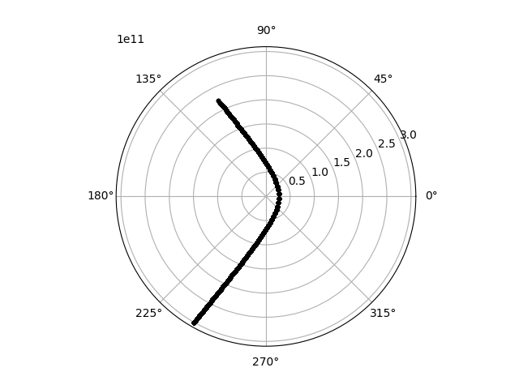
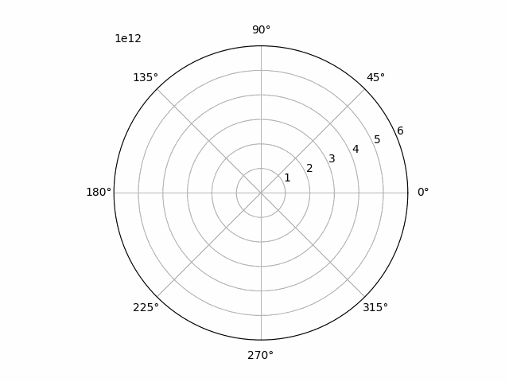
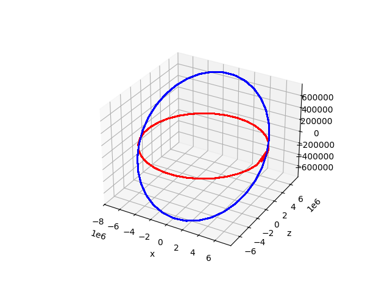

The Celmec Book - or learning elementary celectial mechanics via coding
This a book that want's to be 2 things at once:
- An introduction to elementary celestial mechanics.
- An guide to the
celmecRust library for celestial mechanics.
I'll try to write it so that no pre-requisite knowledge of celestial mechanics is necessary. Some knowledge of basic programming, Rust, Python (especially matplotlib) and vector algebra is needed, though.
After instructions on how to make the celmec library available for you, each chapter introduces a little simulation with visualization with Python. The chapters start with a section about some necessary physics to understand the simulation, the simulation itself as well as its results and then some additional physics which can be seen working in the simulation results. The physics sections will mainly provide ready formulas that other people have proved/calculated from lower principles, but for those interested, there will be references to other texts.
Currently celmec covers only the two-body problem ie. how to bodies move with gravity acting between them, but I'll attempt to extend the library (and then this book) in the future.
Getting the Celmec Library
Celmec is Rust library and can be made available by adding it to your Rust project's Cargo.toml. To get the necessary info about what Cargo.toml is read this and this section from the "The Rust Programming Language" -book.
To use celmec you need to add this to your project's Cargo.toml under [dependencies]:
celmec = { git = "https://github.com/juuso22/celmec.git" }
Celmec uses ndarray for vector algebra, so you also need to add that library to your Cargo.toml. The examples in this book point out which version of ndarray was used for them. I'll try to make it so that the examples would work with the latest version, but given that this a free-time project, I will be checking if newer version work only sporadically.
Two Body Problem
Two Body Problem: Necessary concepts
Before using celmec for simulations, a bare minimum of celestial mechanics concepts are needed. Those familiar with the topic can jump to the next sub-chapter which deals with writing a first simulation.
celmec solves the two-body problem using Newtonian gravitation: a mathematical model to describe the motion of planets around the sun (and all other bodies gravitationally acting with each other for that matter). The following uses results and properties from that model which match the observed reality fairly well for the contents of this chapter. It is good to bear in mind that the Newtonian model for gravity does not hold in all situations and that for the examples to come, simplifications about reality have been done.
Due to the force of gravity the planets around the sun on trajectories that are ellipses, with the sun in on of the foci of the ellipse. The foci are 2 such points inside the ellipse that the sum of the radii from each of them to a point on the ellipse is a constant. In the picture the balck dots are the foci, a and b the radii and a+b is constant:

If the focii are close to one another, the ellipse becomes a circle. As they become further apart, the ellipse becomes more "elongated". A measure of this elongation is called eccentricity which ranges from 0 for a circle and gets closer and closer to 1 as the focii become infinetly far apart. The picture below shows some ellipses for different values of eccentricity, 0, 0.7 and 0.99, respectively:
The shape, size and motion of a planet along the elliptic orbit can be determined from 3 things:
- The gravitational parameter \( \mu \) which is the sum of the masses of the sun and the planet multiplied by an observational constant called the gravitational constant \( G \). The equation for \( \mu \) is then: \( \mu = G(m_{planet} + m_{sun}) \)
- One observed position of the planet with respect to the sun
- The observed speed of the planet with respect to the sun when it is at he position from the previous point
With this knowledge in mind, we can throw ourselves into our first simulation.
Two Body Problem: Simulation
As a first simulation with celmec, we'll simulate one round of Mercury around the sun as a two body problem. We'll first walk through building the simulation, but the final Rust code can be found further down.
Walking through the writing of the simulation
First init a new Rust project called two-body-problem:
cargo init two-body-problem
Edit the project's Cargo.toml by adding the following under [dependencies]:
ndarray = "0.15.6" #Or choose your preferred version
celmec = { git = "https://github.com/juuso22/celmec.git" }
Then we can start editing the project's src/main.rs. First, remove the default content and import the following from ndarray
use ndarray::{Array, Array1}
Then import the following from celmec:
use celmec::{orbit, orbital_elements};
The orbit module contains functions functions for the simulation and the orbital_elements module has functions to calculate certain properties of the orbit without simulating its time-evolution.
Next, we need the masses of Mercury and the sun and some initial conditions for the position and velocity of the planet with respect to the sun. Sun's mass is (the googlable) 1.989 * 1030kg and the mass of Mercury (along other info about the planet that will be used), namely 3.3010 * 1023 kg, can be found from Nasa's fact sheet. To have some simple initial conditions, let's have Mercury furthest away from the sun it reaches (ie. Mercury's aphelion) and let's fix our coordinates so that this point is to the direction of the negative x-axis. The distance of Mercury from the sun in the aphelion is 69.818 * 109 m. According to Kepler's third law, Mercury's orbital velocity is the slowest at aphelion. That slowest speed is 38.86 * 103 m/s and that is in the direction of the negative y-axis. Let's decide, for convenience, that is the to the direction of the negativee y-axis. As a small spoiler, choosing to start with negative values will align our xy-plane nicely with the choice of polar coordinates that will be done later. Now we write all this into the main function of our project:
let mu: f64 = orbit::calculate_mu(3.301e23, 1.989e30);
let rr: Array1<f64> = array![-69.818e9, 0., 0.];
let vv: Array1<f64> = array![0., -38.86e3, 0.];
Before using these values for the simulation, let's first check a key quantity of the system from them: the eccentricity e:
let e: f64 = orbital_elements::calculate_e(rr.clone(), vv.clone(), mu);
println!("Eccentricity: {}", e);
Then we need some info about how long and how finely we want to simulate:
let steps: usize = 100;
let simulation_time: f64 = 7603200.;
The steps is the number of point we want to have results for and simulation_time is the sideral orbit period from the fact sheet above converted to seconds (so * 24 h/d * 60 min/h * 60 s/min). Then we can calculate the true anomaly f for our simulation period using celmec:
let f: Array1<f64> = orbit::calculate_f_from_initial_rr_and_vv(
rr.clone(),
vv.clone(),
mu,
simulation_time,
steps,
);
Despite starting with xy-coordinates, let's switch to polar coordinates as they are somewhat more convenient for orbits. We chose the orbital plane as our xy-plane and in that plane f will serve as the angle for polar coordinates in that plane. But we still need radii corresponding to the values of f we obtained above. For that, we need the semi-major axis a of the system and can then proceed to calculate the radius:
let a: f64 = orbit::calculate_a_from_initial_rr_and_vv(rr, vv, mu);
let radius: Array1<f64> = orbit::calculate_radius_from_f(f.clone(), e, a);
Let's then print some values from our simulation as checks:
println!(
"Maximum distance from the sun (aphelion): {}",
radius.iter().max_by(|a, b| a.total_cmp(b)).unwrap()
);
println!(
"Minimum distance from the sun (perihelion): {}",
radius.iter().min_by(|a, b| a.total_cmp(b)).unwrap()
);
And then write the results into a file. First some imports to the beginning of our main.rs:
use std::fs::File;
use std::io::Write;
And then the actual writing inside the main function:
let mut coordinate_file = File::create("mercury.csv").unwrap();
write!(coordinate_file, "radius,f\n").unwrap();
for i in 0..=(steps - 1) {
write!(coordinate_file, "{},{}\n", radius[i], f[i]).unwrap();
}
Final Rust code
Cargo.toml:
[package]
name = "two-body-problem"
version = "0.1.0"
edition = "2021"
[dependencies]
ndarray = "0.15.6"
celmec = { git = "https://github.com/juuso22/celmec.git" }
main.rs:
use celmec::{orbit, orbital_elements};
use ndarray::{array, Array1};
use std::fs::File;
use std::io::Write;
fn main() {
let mu: f64 = orbit::calculate_mu(3.301e23, 1.989e30);
let rr: Array1<f64> = array![-69.818e9, 0., 0.];
let vv: Array1<f64> = array![0., -38.86e3, 0.];
let e: f64 = orbital_elements::calculate_e(rr.clone(), vv.clone(), mu);
println!("Eccentricity: {}", e);
let steps: usize = 100;
let simulation_time: f64 = 7603200.;
let f: Array1<f64> = orbit::calculate_f_from_initial_rr_and_vv(
rr.clone(),
vv.clone(),
mu,
simulation_time,
steps,
);
let a: f64 = orbit::calculate_a_from_initial_rr_and_vv(rr, vv, mu);
let radius: Array1<f64> = orbit::calculate_radius_from_f(f.clone(), e, a);
println!(
"Maximum distance from the sun (aphelion): {}",
radius.iter().max_by(|a, b| a.total_cmp(b)).unwrap()
);
println!(
"Minimum distance from the sun (perihelion): {}",
radius.iter().min_by(|a, b| a.total_cmp(b)).unwrap()
);
let mut coordinate_file = File::create("mercury.csv").unwrap();
write!(coordinate_file, "radius,f\n").unwrap();
for i in 0..=(steps - 1) {
write!(coordinate_file, "{},{}\n", radius[i], f[i]).unwrap();
}
}
Visualising the results
To visualise the results, the following bit of Python code can be used. Have Python and the necessary libraries installed, and then run the script inside the base directory of the cargo project with:
python plot_two_body_orbit.py
The script itself:
#!/usr/bin/python
import pandas as pd
import math
import matplotlib.pyplot as plt
from matplotlib.animation import FuncAnimation, PillowWriter
df=pd.read_csv("mercury.csv")
def plot_2d_orbit(i):
plt.polar(df.f[0:i], df.radius[0:i], 'k.')
def main():
fig = plt.figure()
plotn=111
ax = fig.add_subplot(plotn, polar=True)
ax.set_rlim(rmin=0, rmax=7e10)
anim = FuncAnimation(fig, plot_2d_orbit, frames=100, repeat=True)
f = r"mercury.gif"
writergif = PillowWriter(fps=20)
anim.save(f, writer=writergif)
plt.show()
if __name__ == "__main__":
main()
A look at the results
The Python script should produce a plot with the all the points at different times plotted at once and an animated gif of the time evolution of the orbit. Let's look at the final plot first:

We have a fairly circular orbit around the origin, which is indeed how a planet's orbit around the sun should look like. By looking carefully, we see that that the orbit is not quite a circle, but stratches further away from the origin on the left. In fact, the orbit should be an ellipsis in fact, but that is perhaps a bit hard to tell with naked eye (at least for the author).
Then, there is the animation:
Mercury's orbit animated

Looking at the animation, we see it starting from the aphelion in the left as expected given our choice of the initial coordinates. One full orbit is then completed. Because true anomaly is measured from perihelion and matplolib sets the zero angle to the direction of the positive x-axis, we picked our initial position and velocity in the way we did so they would align with the final polar view we are using.
Two-Body Problem: The Underlying Physics
To understand the way celmec calculates the true anomaly, definitions for two additional anomalies are needed. Firstly, mean anomaly \( M \) would be the angle from the perihelion if a planet were orbiting the sun on a circular orbit with constant speed. Secondly, eccentric anomaly \( E \) is defined as the image below:
It can be shown, that these two anomalies are related by the Kepler equation:
\[ M = E - e \sin(E) \]
where:
\[ M = \textrm{ mean anomaly } \] \[ E = \textrm{ eccentric anomaly } \] \[ e = \textrm{ eccentricity } \]
The eccentric anomaly is then related to true anomaly by:
\[ f = \arccos( \frac{\cos(E) - e}{1 - e \cos(E)} ) \]
celmec solves the Kepler equation for \( E \) using the Newton-Raphson method for:
\[ 0 = E - e \sin(E) - M \]
Two-body Problem: A Look Inside the Functions Used in the Simulation
To see all the physics and maths described in the previous subchapter to actually take place, one can look inside the function orbit::calculate_f_from_initial_rr_and_vv. It looks like this:
pub fn calculate_f_from_initial_rr_and_vv(
rr: Array1<f64>,
vv: Array1<f64>,
mu: f64,
start_time: f64,
end_time: f64,
steps: usize,
) -> Array1<f64> {
let ee: Array1<f64> = calculate_ee(rr.clone(), vv.clone(), mu);
let e: f64 = calculate_e(rr.clone(), vv.clone(), mu);
let initial_f: f64 = calculate_initial_f_from_initial_conditions(rr.clone(), ee, e);
let initial_eccentric_anomaly: Array1<f64> =
calculate_eccentric_anomaly_from_f(array![initial_f], e);
let a: f64 = calculate_a_from_initial_rr_and_vv(rr, vv, mu);
let n: f64 = calculate_n(mu, a);
let tau: f64 = calculate_tau(
0.,
calculate_mean_anomaly_from_eccentric_anomaly(initial_eccentric_anomaly, e)[0],
n,
);
let t: Array1<f64> = Array1::linspace(start_time, end_time, steps);
let eccentric_anomaly: Array1<f64> = calculate_eccentric_anomaly_iteratively(
t.clone(),
Array1::zeros(steps),
0.0001,
100,
n,
e,
tau,
);
calculate_f_from_eccentric_anomaly(eccentric_anomaly, e)
}
Let's break that down:
eeis a vector is calculated withcalculate_ee. Its length gives the eccentricitye, calculated bycalculate_e.- True anomaly
fat the initial vector positionrris calculated incalculate_initial_f_from_initial_conditionsas it is needed for... - ..initial eccentric anomaly calculated in
calculate_eccentric_anomaly_from_fwhich in turn is needed for... tau, the time at which the planet finds itself at the perihelion, nearest to the sun, calculated incalculate_tau.- An additional quantity is needed to obtain
tau. It's callednand is calculated incalculate_n. - Then an array
tfor all the time points in the simulation is initialized. - Next is the "big thing" of the simulation when eccentric anomaly is calculated for all simulation time points ie. for the array
tincalculate_eccentric_anomaly_iteratively. - Finally we obtain true anomalies
ffrom the previously obtained eccentric anomalies incalculate_f_from_eccentric_anomalyand return that.
All of the above are part of the orbit module of celmec and one could drill down further into each of the above to see what they actually do, but to keep it short(ish), I'll just show here that calculate_eccentric_anomaly_iteratively is where the Newton-Raphson method gets applied like this:
pub fn calculate_eccentric_anomaly_iteratively(
t: Array1<f64>,
initial_value: Array1<f64>,
tolerance: f64,
max_iterations: usize,
n: f64,
e: f64,
tau: f64,
) -> Array1<f64> {
let parameters: HashMap<&str, f64> = HashMap::from([("n", n), ("e", e), ("tau", tau)]);
if e > 1. {
solve_equation_iteratively(
&hyperbolic_kepler_eq_iterative_step,
initial_value,
t,
parameters,
tolerance,
max_iterations,
)
} else if e == 1. {
solve_equation_iteratively(
&barker_eq_iterative_step,
initial_value,
t,
parameters,
tolerance,
max_iterations,
)
} else if (e < 1.) && (e >= 0.) {
solve_equation_iteratively(
&kepler_eq_iterative_step,
initial_value,
t,
parameters,
tolerance,
max_iterations,
)
} else {
panic!("Eccentricity cannot be negative.");
}
}
I'll not go through that function step by step but instead use it to bring up two points. Firstly, note that there is some equation solving happening for e (eccentricity) values of 1 and above. Eccentricity of ellipses is always between 0 and 1 (with 0 included and 1 not). So what does it mean for an orbit to have an eccentricity of 1 or above? It turn out not all orbits are closed ellipses but they can also take the form of a parabola (eccentricity 1) ot a byperbola (eccentricity above 1). These orbits will be the subject of the next subchapter so stay tuned.
But first the second point: in the calculate_eccentric_anomaly_iteratively function the last word in its name, iteratively, might give a hint that there are other ways to calculate the eccentric anomaly instead of Newton-Raphson. And indeed, one could use a series expansion (if one is familiar with such things) by using calculate_f_from_series. Note though, that it currently contains so few terms that it gives something even remotely reliable only for near-circle orbit ie. orbits with eccentricity close to 0.
All the functions described above are public, so they can be used in whatever you might fancy to try with celmec. To see the full technical Rust documentation of the library you can either:
- Git clone the
celmecrepo and runcargo docinside it if you are familiar with git. The output ofcargo docshould tell you where to look next. - Navigate to URL_HERE to see the same docs.
Further in this book, we'll tear some other used functions open in case the author has deemed them to have eaten things of interest. This is done to help out with navigating the the technical Rust documentation as I find those sometimes intimidating to tacḱle head on and want to ease the burden for anyone else feeling similarly.
Two-body problem: Hyperbolic and Parabolic Orbits
Instead of a closed, elliptic orbit like Mercury's objects can also just fly past each other. This happens when we have:
\[ e \ge 1 \]
The \( e > 1 \) case corresponds to a hyperbole-shaped orbit and the \( e = 1 \) case to a parabola and after some algebra the replacement for Kepler equation for these two cases becomes:
\[ n(t-\tau) = e\sinh{E} - E, \textrm{ when } e \gt 0 \]
\[ n(t-\tau) = \frac{E^3}{6}+\frac{E}{2}, \textrm{ when } e = 0 \]
Where the quantity \( n \) cannot geometrically be understood as in the elliptic case, but obeys the formula:
\[ n = \sqrt{\mu}a^\frac{-3}{2} \]
In case of an eccentricity greater or equal to 1, celmec solves these equations instead of the Kepler equation.
Simulating a hyperbolic orbit
To simulate a hyperbolic orbit, we can use the Mercury example, but give the nearest planet the following initial conditions:
let rr: Array1<f64> = array![-3e11, 0., 0.];
let vv: Array1<f64> = array![-6e4, -1e4, 0.];
The plotting script also needs a small scaling adjustment then:
ax.set_rlim(rmin=0, rmax=3.1e11)
and rerunning the simulation we should end up with the following:

and the same animated:
"Flyby Mercury's" orbit animated

You can try playing around with different initial conditions, simulation times and object masses to see what kind of orbits you'll get!
Parabolic orbit simulation
As it's a bit tedious to construct a combination of initial conditions and masses that would result in an eccentricity of exactly 1, it would be handy if we could start by telling celmec to simulate using a given e. Here is where it's time to change chapters and talk about orbital elements which will enable us to do just that.
Keplerian Elements
Instead of starting with a known initial position and velocity of a planet it is also possible to have collected a collection of the properties of the orbit and to calculate the time-evolution of the planet along the orbit using those. One set of such properties are called the Keplerian elements and what they are is described in Wikipedia with an especially helpful picture attached at the time of the writing.
In a nutshell, the Keplerian elements as used by celmec consist of quantities that describe:
- How the plane of the orbit of the planet (or other object of interest) is positioned vis-à-vis the ecliptica ie. the plane on which the erath orbits the sun. These quantities are the angle between the orbital plane of the object being studied and ecliptica: inclination (
iota) and the angle at which the orbit rises from below above to ecliptica with respect to a fixed direction (spring equinox): longitude of the ascending node (longitude_of_the_ascending_node). - How the orbit is shaped ie. its eccentricity
eand semi-major axisa. - The angle from longitude of the ascending node to the perihelion along the orbital plane: argument of perihelion (
omega) - A time at which the object passes its perihelion
tau. Note that if you read the Wikipedia article, this differs slightly from the "true anomaly at t0":tauis equal to that t0 when true anomaly is 0.
Next a little simulation using the Keplerian elements. And the reason I moved from talking about the orbit of a planet to the orbit of an object is because the simulation target won't be a planet, but a comet instead.
Keplerian Elements: Simulation
To demonstrate the use of Keplerian elements, let's calculate the orbit of Halley's comet. I have stolen the Keplerian elements from Wikipedia.
Walking through the writing of the simulation
First init a new rust project called halleys-comet:
cargo init halleys-comet
Edit the project's Cargo.toml by adding the following under [dependencies]:
celmec = { git = "https://github.com/juuso22/celmec.git" }
ndarray = "0.15.6" #Or choose your preferred version
Then we can start editing the project's src/main.rs. First, remove the default content and import the following from ndarray
use ndarray::{Array, Array1}
Then import the following from celmec:
use celmec::orbital_elements
The orbital_elements module contains a sturct called KeplerianElements which will contain the Keplerian elements of the body we want to simulate. The following abbreviations for the elements are used (for a full list of all abbreviations used in celmec see Glossary of Terms):
a - semi-major axis
e - eccentricity
iota - inclination
tau - perihelion time
omega - argument of periapsis
In our main function, let's create an instance of KeplerianElements for Halleys' comet:
let halleys_keplerian_elements = orbital_elements::KeplerianElements {
e: 0.96658,
longitude_of_the_ascending_node: 1.03665,
tau: 0.,
a: 2.65342e12,
iota: 2.82673,
omega: 1.95564,
};
Everything is in SI units and the perihelion time is set to zero for simplicity.
Next, we need some mote imports from celmec to actually calculate something using the orbital elements:
use celmec::{orbit, orbital_elements};
The orbit module has functions to calculate properties of the orbit and/or time evolution of various quantities. We'll first calculate the time evolution of true anomaly (denoted f) from the Keplerian elemnts. We'll cheat a little and choose the time interval for which calculate from tau to tau + the time of one rotation of the comet around the sun to see a nice full ellipsis. The time of the rotation we look up again from Wikipedia and convert it to seconds:
let ticks = 200;
let rotation_time = 2379801600.;
let time: Array1<f64> = Array::linspace(halleys_keplerian_elements.tau, halleys_keplerian_elements.tau + rotation_time, ticks);
let f: Array1<f64> = orbit::calculate_f_from_series(
time.clone(),
halleys_keplerian_elements.e,
rotation_time,
halleys_keplerian_elements.tau,
);
Here series refers to the Fourier series. The array f represents the true anomaly at each point of time we are calculating for.
From true anomaly and the Keplerian elemnts, polar coordinates (with Sun at the origin) be calculated over our chosen time interval time. First we need to add another import, though:
use celmec::{orbit, orbital_elements, transformations};
Then we can calculate:
let radius = orbit::calculate_radius_from_f(
f.clone(),
halleys_keplerian_elements.e,
halleys_keplerian_elements.a,
);
let polar_angle = transformations::polar_angle_from_keplerian_elements(
f.clone(),
halleys_keplerian_elements.iota,
halleys_keplerian_elements.omega,
);
Let's write the polar coordinates and time into a file. First some imports:
use std::fs::File;
use std::io::Write;
Then the actual writing:
let mut coordinate_file = File::create("halleys_polar_coordinates.csv").unwrap();
write!(coordinate_file, "t,radius,polar_angle\n").unwrap();
for i in 0..=(ticks - 1) {
write!(
coordinate_file,
"{},{},{}\n",
time[i], radius[i], polar_angle[i]
)
.unwrap();
}
Final rust code
Cargo.toml:
[package]
name = "halleys-comet"
version = "0.1.0"
edition = "2021"
# See more keys and their definitions at https://doc.rust-lang.org/cargo/reference/manifest.html
[dependencies]
ndarray = "0.15.6"
celmec = { git = "https://github.com/juuso22/celmec.git" }
src/main.rs:
use celmec::{orbit, orbital_elements, transformations};
use ndarray::{Array, Array1};
use std::fs::File;
use std::io::Write;
fn main() {
let halleys_keplerian_elements = orbital_elements::KeplerianElements {
e: 0.96658,
longitude_of_the_ascending_node: 1.03665,
tau: 0.,
a: 2.65342e12,
iota: 2.82673,
omega: 1.95564,
};
let ticks = 200;
let rotation_time: f64 = 2379801600.;
let time: Array1<f64> = Array::linspace(
halleys_keplerian_elements.tau,
halleys_keplerian_elements.tau + rotation_time,
ticks,
);
let f: Array1<f64> = orbit::calculate_f_from_series(
time.clone(),
halleys_keplerian_elements.e,
rotation_time,
halleys_keplerian_elements.tau,
);
let radius = orbit::calculate_radius_from_f(
f.clone(),
halleys_keplerian_elements.e,
halleys_keplerian_elements.a,
);
let polar_angle = transformations::polar_angle_from_keplerian_elements(
f.clone(),
halleys_keplerian_elements.iota,
halleys_keplerian_elements.omega,
);
let mut coordinate_file = File::create("halleys_polar_coordinates.csv").unwrap();
write!(coordinate_file, "t,radius,polar_angle\n").unwrap();
for i in 0..=(ticks - 1) {
write!(
coordinate_file,
"{},{},{}\n",
time[i], radius[i], polar_angle[i]
)
.unwrap();
}
}
Visualising the results
To visualise the results, the following bit of Python code can be used. Have Python and the necessary libraries installed, and then run the script inside the base directory of the cargo project with:
python plot_halleys_orbit.py
The script itself:
import pandas as pd
import math
import matplotlib.pyplot as plt
from matplotlib.animation import FuncAnimation, PillowWriter
df=pd.read_csv("halleys_orbit_2d.csv")
def plot_2d_orbit(i):
plt.polar(df.f[0:i], df.radius[0:i], 'k.')
def main():
fig = plt.figure()
plotn=111
ax = fig.add_subplot(plotn, polar=True)
ax.set_rlim(rmin=0, rmax=6e12)
anim = FuncAnimation(fig, plot_2d_orbit, frames=50, repeat=True)
f = r"halley.gif"
writergif = PillowWriter(fps=20)
anim.save(f, writer=writergif)
plt.show()
if __name__ == "__main__":
main()
So what do the simulation results look like
The way the above python script is done, should save an animated gif, but print a graph where the position of the comet at all the chosen time points. That graph should look something like this:

The orbit look like an ellipse as it should. Moreover, it can be seen that the further from the middle (ie. the Sun) the comet is the closer the plotted orbit points are to each other. As the time between two consecutive points is constant, this means that the further the comet is from the Sun, the slower it moves. This is even clearer in the animation of the orbit:
Halley's comet's orbit animated

This is in fact what Kepler's third law tells us and to explain what that is all about, it's best to jump to the next physics chapter.
Keplerian Elements: Parabolic Orbit
With Keplerian elements, creating a simulation for parabolic orbit becomes somewhat easier. Instead of trying to figure out a right position-velocity combination to get \( e = 1 \), we can just set the eccentricity to one. Let's do that for Halley's comet by changing the definition of the Keplerian elements from the previous simulation to the following:
let halleys_keplerian_elements = orbital_elements::KeplerianElements {
e: 1., //This has now changed compared to the previous simulation
longitude_of_the_ascending_node: 1.03666,
tau: 0.,
a: 2.65342e12,
iota: 2.82674,
omega: 1.95564,
};
One further change is needed. As the orbit will now be parabolic, there is no longer a rotation_time which can be used to calculate the 5th argument in:
let eccentric_anomaly: Array1<f64> = orbit::calculate_eccentric_anomaly_iteratively(
time.clone(),
time.clone(),
0.00001,
100,
2. * PI / rotation_time,
halleys_keplerian_elements.e,
halleys_keplerian_elements.tau,
);
But that 5th argument is the quantity \(n\), which can alternatively be calculated from the formula:
\[ n = \sqrt{\mu}a^\frac{-3}{2}, \textrm{ where } \mu = G(m_1m_2) \]
celmec in fact has functions to calculate bot \(n\) and \(\mu\). Let's first add a line somewhere before the calculation of the eccentric anomaly which calculates the latter. I'll be lazy and not look up any estimates for the mass of the comet but simply set \(m_1\) to the mass of the Sun and \(m_2=0\):
let mu: f64 = orbit::calculate_mu(1.989e30, 0.);
Then the 5th parameter in the calculation of the eccentric anomaly can be set as follows:
let eccentric_anomaly: Array1<f64> = orbit::calculate_eccentric_anomaly_iteratively(
time.clone(),
time.clone(),
0.00001,
100,
orbit::calculate_n(mu, halleys_keplerian_elements.a),
halleys_keplerian_elements.e,
halleys_keplerian_elements.tau,
);
When you run the simulation, Rust compiler will complain about unused import of the PI constant. You can get rid of that by commenting the line:
use std::f64::consts::PI;
if you want to.
Simulation results
Running the modified Rust coed and the plotter script should yield the following nice parabola:

And the same thing animated:
"Flyby Halley's" orbit animated

Keplerian Elements: Coordinate Transformation
So far all the visualisations in this book have been restricted to the orbital plane of the system being simulated. However, the Keplerian elements contain a bunch of angles, which determine the the position of the orbit with respect to the orbital plane of the Earth. For 3d visuals, let us know use these angles to switch from the plane of the system to a three-dimensional volume where the Sun lies at origin and the xy-plane is the orbital plane of the earth and use cartesian coordinates there. In order to do that, we can copy the code from the original simulation of Halley's comet's orbit and add some pieces.
Firstly, in order to do the coordinate switch, we'll need the transformations module of celmec so we'll modify our imports as follows:
use celmec::{orbit, orbital_elements, transformations};
Then, after calculating the radii and true anomalies, the new module can be used to perform the coordinate transformation:
let cartesian_coordinates: (Array1<f64>, Array1<f64>, Array1<f64>) =
transformations::cartesian_coordinates_from_f_r_and_keplerian_elements(
f.clone(),
radius.clone(),
halleys_keplerian_elements,
);
Then the output file generation has to be adjusted as well. Instead of what we previously had, we'll use:
let mut coordinate_file = File::create("halleys_orbit_3d.csv").unwrap();
write!(coordinate_file, "x,y,z\n").unwrap();
for i in 0..=(ticks - 1) {
write!(
coordinate_file,
"{},{},{}\n",
cartesian_coordinates.0[i], cartesian_coordinates.1[i], cartesian_coordinates.2[i],
)
.unwrap();
}
The Final Rust Code
In the end, Config.toml should look like this:
[package]
name = "coordinate-transformation"
version = "0.1.0"
edition = "2021"
[dependencies]
ndarray = "0.15.6"
celmec = { git = "https://github.com/juuso22/celmec.git" }
and main.rs should look like this
use celmec::{orbit, orbital_elements, transformations};
use ndarray::Array1;
use std::fs::File;
use std::io::Write;
fn main() {
let halleys_keplerian_elements = orbital_elements::KeplerianElements {
e: 0.96658,
longitude_of_the_ascending_node: 1.03666,
tau: 0.,
a: 2.65342e12,
iota: 2.82674,
omega: 1.95564,
};
let ticks = 50;
let rotation_time: f64 = 2379801600.;
let mu: f64 = orbit::calculate_mu(1.989e30, 0.);
let f: Array1<f64> = orbit::calculate_f_from_keplerian_elements(
&halleys_keplerian_elements,
mu,
halleys_keplerian_elements.tau - rotation_time / 2.,
halleys_keplerian_elements.tau + rotation_time / 2.,
ticks,
);
let radius = orbit::calculate_r_from_f(
f.clone(),
halleys_keplerian_elements.e,
halleys_keplerian_elements.a,
);
let cartesian_coordinates: (Array1<f64>, Array1<f64>, Array1<f64>) =
transformations::cartesian_coordinates_from_f_r_and_keplerian_elements(
f.clone(),
radius.clone(),
halleys_keplerian_elements,
);
let mut coordinate_file = File::create("halleys_orbit_3d.csv").unwrap();
write!(coordinate_file, "x,y,z\n").unwrap();
for i in 0..=(ticks - 1) {
write!(
coordinate_file,
"{},{},{}\n",
cartesian_coordinates.0[i], cartesian_coordinates.1[i], cartesian_coordinates.2[i],
)
.unwrap();
}
}
Visualising the results
For the visualisation, the following python script can be used:
import pandas as pd
import numpy as np
import math
import matplotlib.pyplot as plt
from matplotlib.animation import FuncAnimation, PillowWriter
df=pd.read_csv("halleys_orbit_3d.csv")
def plot_3d_orbit(i):
plt.plot(df.x[0:i], df.y[0:i], df.z[0:i], 'k.')
def main():
fig = plt.figure()
plotn=111
ax = fig.add_subplot(plotn, projection='3d')
ax.set_xlabel("x")
ax.set_ylabel("y")
ax.set_zlabel("z")
ax.set_xlim([0, 1.1*np.max(df.x)])
ax.set_ylim([1.1*np.min(df.y), 1.1*np.max(df.y)])
ax.set_zlim([1.1*np.min(df.z), 0])
anim = FuncAnimation(fig, plot_3d_orbit, frames=50, repeat=True)
f = r"halley_3d.gif"
writergif = PillowWriter(fps=20)
anim.save(f, writer=writergif)
plt.show()
if __name__ == "__main__":
main()
which can be run like this:
python plot_halleys_3d_orbit.py
This should give an image like this:
and the same animated:
Halley's 3d orbit animated
Keplerian Elements: A Look Inside the Transformation
To wrap up with Keplerian elements, let's have a look inside the coordinate transformation function cartesian_coordinates_from_f_r_and_keplerian_elements:
pub fn cartesian_coordinates_from_f_r_and_keplerian_elements(
f: Array1<f64>,
r: Array1<f64>,
keplerian_elements: orbital_elements::KeplerianElements,
) -> (Array1<f64>, Array1<f64>, Array1<f64>) {
let (theta, phi) = spherical_coordinates_from_f_and_keplerian_elements(f, keplerian_elements);
cartesian_coordinates_from_spherical_coordinates(theta, phi, r)
}
There we see that to obtain the cartesinan coordinates, we actually go through spherical coordinates first. Let's dig deeper to see where those come from in spherical_coordinates_from_f_and_keplerian_elements:
pub fn spherical_coordinates_from_f_and_keplerian_elements(
f: Array1<f64>,
keplerian_elements: orbital_elements::KeplerianElements,
) -> (Array1<f64>, Array1<f64>) {
let theta: Array1<f64> = theta_from_keplerian_elements(
f.clone(),
keplerian_elements.iota,
keplerian_elements.omega,
keplerian_elements.longitude_of_the_ascending_node,
);
let phi: Array1<f64> =
phi_from_keplerian_elements(f, keplerian_elements.iota, keplerian_elements.omega);
(theta, phi)
}
Here are separate functions for both spherical angle coordinates theta and phi. Both functions to obtain these cooedinates, theta_from_keplerian_elements and phi_from_keplerian_elements, are public for you to use as you please if using celmec. The technical Rust documentation will in turn provide details about the formulae used to calculate the angles: go check it out if you want to tear open the black box of maths used by celmec!
System: A celmec Data Structure
Before moving forward with the physics, I'll introduce the concept of a System. In celmec, a System is a celestial mechanics entity whose time-evolution can be simulated. As an example, the two bodies with one orbiting around the other as we have seen in this books so far is a system. In fact, such a TwoBodySystem is currently the only available System in celmec. The concept of a System will, however, enable creation of further systems such as ones having more than two bodies or using a gravitational potential other than that of a sphere.
Making a Simulation using a TwoBodySystem
To simulate a TwoBodySystem, let's first create a new project with: cargo init system. Then we'll start crafting systrem/src/main.rs.
First we need some imports:
use celmec::{system::System, two_body};
use ndarray::{array, Array1, Array2};
use std::fs::File;
use std::io::Write;
The first line imports the already familiar methods to manipulate a 2-body system and, with system::System the methods that any System has available.
Then, inside the main function, we shall wipe out the default "Hello, world" stuff and start by adding some information that will make up our TwoBodySystem to be:
let mu: f64 = two_body::calculate_mu(3.301e23, 1.989e30);
let rr: Array1<f64> = array![-69.818e9, 0., 0.];
let vv: Array1<f64> = array![0., -38.86e3, 0.];
let end_time: f64 = 7603200.;
These are the same things that were allready used in our first 2-body simulation of Mercury.
Next we'll do something different though: create a TwoBodySystem:
let system: two_body::TwoBodySystem = two_body::create_two_body_system(0., end_time, 100, mu, rr, vv);
The inputs of the create_two_body_system are: starting time of the simulation, ending time of the simulation, number of simulated steps, the gravitational parameter, the initial position of the orbiting body with respect to the central body and the initial velocity of the orbiting body with respect to the central body. You can always also check the function out in the technical docs.
Any simulation of a System will output an array of arrays (Array2<f64>) where the rows are simulation results for all the simulation steps and a the columns represent time, x,y and coordinates and vx, vy and vz going from column number 0 upwards. For a TwoBodySystem the cartesian coordinated are with respect to a system where the xy-plane is defined as the plane against which inclination is measured and positive x-axis points into the direction from which longitude of the ascending node is measured. To get simulation result orbit, we do:
let orbit: Array2<f64> = system.simulate();
And then write the simulation results in a file to be used for visualisations:
let mut coordinate_file = File::create("mercury.csv").unwrap();
write!(coordinate_file, "t,x,y,z,v_x,v_y,v_z\n").unwrap();
for i in 0..orbit.dim().1 {
write!(
coordinate_file,
"{},{},{},{},{},{},{}\n",
orbit[[0, i]],
orbit[[1, i]],
orbit[[2, i]],
orbit[[3, i]],
orbit[[4, i]],
orbit[[5, i]],
orbit[[6, i]]
)
.unwrap();
}
The complete `main.rs`
use celmec::{system::System, two_body};
use ndarray::{array, Array1, Array2};
use std::fs::File;
use std::io::Write;
fn main() {
let mu: f64 = two_body::calculate_mu(3.301e23, 1.989e30);
let rr: Array1<f64> = array![-69.818e9, 0., 0.];
let vv: Array1<f64> = array![0., -38.86e3, 0.];
let end_time: f64 = 7603200.;
let system: two_body::TwoBodySystem = two_body::create_two_body_system(0., end_time, 100, mu, rr, vv);
let orbit: Array2<f64> = system.simulate();
let mut coordinate_file = File::create("mercury.csv").unwrap();
write!(coordinate_file, "t,x,y,z,v_x,v_y,v_z\n").unwrap();
for i in 0..orbit.dim().1 {
write!(
coordinate_file,
"{},{},{},{},{},{},{}\n",
orbit[[0, i]],
orbit[[1, i]],
orbit[[2, i]],
orbit[[3, i]],
orbit[[4, i]],
orbit[[5, i]],
orbit[[6, i]]
)
.unwrap();
}
}
Visualising the results
In order to run the created Rust code, jump into its system project directory and run cargo run. To get some visuals out of the generated mercury.csv file, run the following python script with python plot_system_orbit.py:
Python script for orbit visualisation
import pandas as pd
import numpy as np
import math
import matplotlib.pyplot as plt
from matplotlib.animation import FuncAnimation, PillowWriter
df=pd.read_csv("mercury.csv")
def main():
fig = plt.figure()
plotn=111
ax = fig.add_subplot(plotn)
ax.set_xlim([1.1*np.min(df.x), 1.1*np.max(df.x)])
ax.set_ylim([1.1*np.min(df.y), 1.1*np.max(df.y)])
plt.plot(df.x, df.y, 'r.')
plt.show()
if __name__ == "__main__":
main()
This should produce a familiar-looking ellipse from the first chapter:
Note that the initial conditions were chosen so that the orbit lies on the xy-plane. Hence the z-coordinate is 0 throughout.
System in Rust terms
In Rust terms, System is actually a trait. That means roughly that it defines a collection of methods that any struct implementing that trait (such as TwoBodySystem) must define (or use the default definitions of the methods in the trait if they exist). More on traits in the Rust book. That means, that you can in fact implement your own System if you feel so inclined!
Impulse
What if we gave a body orbiting another a little push? Such a pushes are called impulses and they are handy to for eg. satellites to move them from one orbit to another.
In celmec, an impulse can be applied to a System. To make such a simulation, let's again create a new project cargo init impulse, navigate to impulse/src/main.rs adn add the required imports, which in this case are:
use celmec::{impulse, two_body};
use ndarray::{array, Array1, Array2};
use std::f64::consts::PI;
use std::fs::File;
use std::io::Write;
So, in addition to the 2-body simulation module two_body, we now also import a module called impulse.
The let's start crafting a main function. We'll simulate a 500 kg satellite orbiting Earth, so let's first calculate the mu if that system:
let mu: f64 = two_body::calculate_mu(5.972e24, 5.0e3);
Then, let's have the satellite on a circular orbit at an altitude of 800 km. On a circular orbit, the semi-major axis a is equal to the radius of the orbit, which in turn is is the sum of the altitude and Earth's radius. We'll store the a on a variable for convenience further down the line:
let a: f64 = 8.0e5 + 6.378e6;
Next, also for later convenience, let's store the period of the circular orbit ie. how long it takes for the satellite to complete one rotation around the Earth. To that end, we can use the calculate_period method from the two_body module:
let period: f64 = two_body::calculate_period(mu, a);
Then it's time to crate a System from an initial position and velocity:
let rr0: Array1<f64> = array![a, 0., 0.];
let vv0: Array1<f64> = array![0., 2. * a * PI / period, 0.];
let system =
two_body::create_two_body_system(0., 3. * period, 99, mu, rr0.clone(), vv0.clone());
The magnitude of the y-component of vv0 is determined as follows: on a circular orbit, the speed of the satellite is constant (and I simply chose to have it in the positive y-direction at time 0) and that constant speed is the length of the orbit devided by the period. The length of the orbit is the circumference of the a spehere of radius a, so hence the 2. * a * PI in the denominator.
Next, we'll define the impulse to be applied. Currently, an impulse in celmec is an array of changes in velocity at a given time points. That information is put in an Array2<f64> where the first row are the time points and the subsequent rows are the velocity changes's x, y, and z components, respectively. For our simple simulation, let's have a simplu velocity change (or delta-v or Δv) after one period:
let impulse: Array2<f64> = array![[period], [0.], [1.2e3], [0.]];
The impulse is in the direction of travel (ie. positive y-direction, check vv0 which is the same as velocity after a full rotation) and I chose its magnitude (in m/s) by the scientific process of trying out a bunch of values and picking one that seemed to give a nice-looking result (the reader is encouraged to try their own values, more on that at the end of the chapter).
Then it's time to simulate: we'll now use the impulse module and its wrap-it-all function calculate_impulse_effect:
let orbit: Array2<f64> = impulse::calculate_impulse_effect(&system.clone(), impulse);
The outputted orbit has the same format as the output of simulate on a System would have ie. the rows being time, x, y, z, vx, vy and vz, respectively, and columns representing those quantities for each time point of the simulation.
Finally, we'll write the orbit to a .csv file for some visualisations:
let mut coordinate_file = File::create("satellite.csv").unwrap();
write!(coordinate_file, "t,x,y,z,v_x,v_y,v_z\n").unwrap();
for i in 0..orbit.dim().1 {
write!(
coordinate_file,
"{},{},{},{},{},{},{}\n",
orbit[[0, i]],
orbit[[1, i]],
orbit[[2, i]],
orbit[[3, i]],
orbit[[4, i]],
orbit[[5, i]],
orbit[[6, i]]
)
.unwrap();
}
The complete `main.rs`
use celmec::{impulse, two_body};
use ndarray::{array, Array1, Array2};
use std::f64::consts::PI;
use std::fs::File;
use std::io::Write;
fn main() {
let mu: f64 = two_body::calculate_mu(5.972e24, 5.0e2);
let a: f64 = 8.0e5 + 6.378e6;
let period: f64 = two_body::calculate_period(mu, a);
let rr0: Array1<f64> = array![a, 0., 0.];
let vv0: Array1<f64> = array![0., 2. * a * PI / period, 0.];
let system =
two_body::create_two_body_system(0., 3. * period, 99, mu, rr0.clone(), vv0.clone());
let impulse: Array2<f64> = array![[period], [0.], [1.2e3], [0.]];
let orbit: Array2<f64> = impulse::calculate_impulse_effect(&system.clone(), impulse);
let mut coordinate_file = File::create("satellite.csv").unwrap();
write!(coordinate_file, "t,x,y,z,v_x,v_y,v_z\n").unwrap();
for i in 0..orbit.dim().1 {
write!(
coordinate_file,
"{},{},{},{},{},{},{}\n",
orbit[[0, i]],
orbit[[1, i]],
orbit[[2, i]],
orbit[[3, i]],
orbit[[4, i]],
orbit[[5, i]],
orbit[[6, i]]
)
.unwrap();
}
}
Visualising the results
As before, run cargo run to obtain a file called satellite.csv with the simulated orbit in it. To visualise the results, a python script called plot_impulsed_orbit.py is created:
`plot_impulsed_orbit.py`
import pandas as pd
import numpy as np
import math
import matplotlib.pyplot as plt
from matplotlib.animation import FuncAnimation, PillowWriter
df=pd.read_csv("satellite.csv")
def plot_orbit(i):
if i < 33:
plt.plot(df.x[0:i], df.y[0:i], 'r')
else:
plt.plot(df.x[0:34], df.y[0:34], 'r')
plt.plot(df.x[33:i], df.y[33:i], 'b')
def main():
fig = plt.figure()
plotn=111
ax = fig.add_subplot(plotn)
ax.set_xlabel("x")
ax.set_ylabel("y")
ax.set_xlim([1.1*np.min(df.x), 1.1*np.max(df.x)])
ax.set_ylim([1.1*np.min(df.y), 1.1*np.max(df.y)])
anim = FuncAnimation(fig, plot_orbit, frames=101, repeat=False)
f = r"satellite.gif"
writergif = PillowWriter(fps=20)
anim.save(f, writer=writergif)
plt.show()
if __name__ == "__main__":
main()
and run with python plot_impulsed_orbit.py. It should produce a graph like this one:

For clarity, the orbit before the impulse is colored red and the orbit after applying the impulse is colored blue. The impulse has transformed the previously circular orbit into an ellipsis whose periapsis has remained at the point where the impulse was applied. Because the orbit was initially on the xy-plane and and impulse along that plane kept it there, visualisation is only done on that plane. However, the Rust code writes the coordinates in all dimensions down, so if you feel like editing the impulse of the Rust code into something different, you'll have the necessary output from the code to do 3d-visualisations by editing the Python script.
There is also an animation satellite.gif which should look more or less like this:
Satellite impulse animated

Two alternative impulses
For the sake of a bit of fun let's try two edits to the impulse in the Rust code.
Firstly, let's keep the impulse's direction but triple its magnitude:
let impulse: Array2<f64> = array![[period], [0.], [3. * 1.2e3], [0.]];
Then cargo run and python plot_impulsed_orbit.py should produce this visualisation:

So this new impulse was big enough to throw the sateliite out of Earth's orbit into a hyperbolic trajectory.
Secondly, let's dip the the orbit into the z-direction:
let impulse: Array2<f64> = array![[period], [0.], [0.], [0.1 * 2. * a * PI / period]];
Now we can generate a 3d graph with a modified Python script:
The modified Python script for 3d graph
import pandas as pd
import numpy as np
import math
import matplotlib.pyplot as plt
from matplotlib.animation import FuncAnimation, PillowWriter
df=pd.read_csv("satellite.csv")
def plot_orbit(i):
if i < 33:
plt.plot(df.x[0:i], df.y[0:i], df.z[0:i], 'r')
else:
plt.plot(df.x[0:34], df.y[0:34], df.z[0:34], 'r')
plt.plot(df.x[33:i], df.y[33:i], df.z[33:i], 'b')
def main():
fig = plt.figure()
plotn=111
ax = fig.add_subplot(plotn, projection='3d')
ax.set_xlabel("x")
ax.set_ylabel("y")
ax.set_ylabel("z")
ax.set_xlim([1.1*np.min(df.x), 1.1*np.max(df.x)])
ax.set_ylim([1.1*np.min(df.y), 1.1*np.max(df.y)])
ax.set_zlim([1.1*np.min(df.z), 1.1*np.max(df.z)])
anim = FuncAnimation(fig, plot_orbit, frames=101, repeat=False)
f = r"satellite.gif"
writergif = PillowWriter(fps=20)
anim.save(f, writer=writergif)
plt.show()
if __name__ == "__main__":
main()
Now a cargo run and python plot_impulsed_orbit.py should generate an image like:

Looking at the point of the impulse in more detail, we see that the first orbit does not quite close, even though the impulse happens when the first period completes. This is because, the impulse point does not match any simulation point and thus there is a "discontinuous" jump between the last simulation point of the un-impulsed orbit and the first simulation point of the impulsed points.

The next subchapter deals with the implementation details of the impulse and explains how to match the simulation and impulse points. But before that, here is the animated version of the 3d orbit toconclude this section:
Impulse in the z-direction animated

Impulse: Implementation Details
Celmec simulations are done from a starting time to an ending time for a given number of equidistanced steps. We can start from eg. time 0, end at time 3 and have 4 steps. A step represents a time point for which we simulate so the starting and ending times are the first and the last steps, respectively. Therefore, for the 4-step simulation time of the example, the steps are 0, 1, 2 and 3.

An impulse can happen at any time between start and end time (including the endpoints themselves) and these times may or may not coincide with the steps.
Let's consider what happens when impulse point coincide with step. In this case, a simulation is done up to step before the impulse happens. Then, a transient simulation (in the sense that no results from this simulation are returned) is done from the latest simulated step to the impulse point, after which the impulse is applied. As the impulse point coincides with a step, we can then proceed with the simulation starting from that step but with a velocity modified by the impulse.
Say, that the impulse happens at time 2 in our 4-step example. In that case, a simulation would first run through steps 0 and 1. After that, a transient simulation is done for step 2 using simulation resuslt from step 1 as initial conditions. Then, the impulse is applied to the simulation results at step 2 from the transient simulation. Then the simulation results from step 2 with the impulse applied are used as initial conditions to simulate steps 2 and 3.
In case the impulse falls between two steps, the process is as follows. First, simulation is done up until the last step before the impulse. Then a transient simulation is done from the lest simulation point to the impulse point. The impulse is applied on the result of the transient simulation at the impulse point. Another transient simulation is carried out starting from the impulse point with the results of the previous transient simulation and the impulse application as the initial conditions. With these initial conditions, the next step is transiently simulated and the results are then used as initial conditions for a simulation from that step onward (including the step itself).
To use the previous 4-step example again, say the impulse happens at time 1.5. In this case a simulation is first done for steps 0 and 1. Then the first transient simulation is done from 1 to 1.5 and the impulse is then applied at the latter point. Using the result of the transient simulation and the application of the impulse as the initial conditions at 1.5, another transient simulation is carried for step 2. The results of this simulation are then set as initial conditions using which steps2 and 3 are simulated.

Giving a "Continuous" Impulse
With the information above, we can adjust the example at the end of the previous chapter to match the impulse to a simulation point. In the example, we were simulating for a total of three times the period of the original orbit with 99 points. To match the impulse at the time corresponding one orbit period, let's change the number of simulated points to 100.
Here is why this works: say we simulated for only one period instead of three and had 34 simulation points. Then we would start at the position at the starting time, have 32 steps on the orbit and then our last 34th (starting step + the 32 intermediary steps + 1) step on the starting position again (because after one period, the position is same as at the starting time). So we have 33 distinct positions on the orbit and on hte 34th step we hit the initial position again. Now switch to a total simulation time of 3 periods with 100: for each period we would have 33 distinct positions and then on the 34th step since the start of the period we would hit the initial positions again (ie. on 34th and 67th step counting from the very beginning). Spaving our steps in such a manner, we are guarantted to match step 34 to the period. However, at step 99 we would be a have our 33 distinct positions hit 3 times, but we would need to add an extra step that returns to the initial position at time 3 times the period. And hence we have a grand total of 100 steps.
By modifying the version of the Rust code of the previous section with an impulse in the z-direction by adding a simulation point:
let system = two_body::create_two_body_system(0., period, 100, mu, rr0.clone(), vv0.clone());
We get the following graph
For some reason the impulse point does not still not look as smooth as expected, but I'd argue it's already smoother than previously:
Again, a nice animated version to end with:
Continuous z-directional impulse animated

Glossary of Terms
This a list of abbreviations that celmec aims to use:
a - semi-major axis
ee - vector pointing towards the perihelion
e - eccentricity (euclidean norm of ee)
f - true anomaly
G - gravitational constant
h - energy integral (freely translated from Finnish 'energiaintegraali' used in Johdatus Taivaanmekaniikkaan by Karttunen, 2020)
kk - angular momentum vector
k - angular momentum scalar (euclidean norm of kk)
m - mass
n - average angular velocity
rr - position vector
r - distance (euclidean norm of rr)
vv - velocity vector
v - velocity (euclidean norm of vv)
t - time
theta - polar angle (spherical coordinates)
iota - inclination
tau - perihelion time
phi - azimuthal angle (spherical coordinates)
omega - argument of periapsis
Note in the above, that when same letter is usually used for a scalar and a vector, the letter is doubled for the vector in the code.